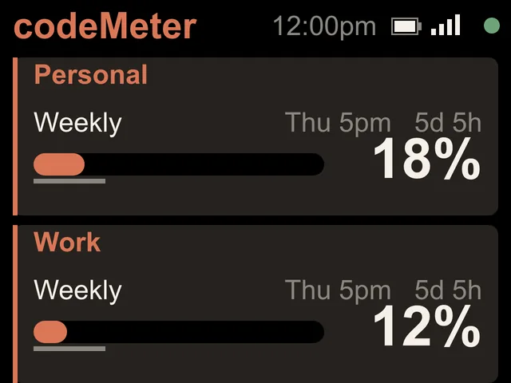

Claude Pro
Your Claude Pro limit, at a glance.
Claude Pro has one weekly limit. codeMeter shows it as one big number, with when it resets and whether you are on pace.


On the screen
One limit, one big card.
Since October 30, 2026, Claude Pro has a weekly limit only.
- WEEKLY (7d)The percent of your weekly limit used, with a bar.
- Grey line under the barHow much of the week has passed. If the bar gets ahead of it, you are spending faster than the clock.
- RESETSThe day and time it resets in your time zone, and a countdown, like Thu 5pm in 5d 5h.
- PACEOn track, Ahead of pace (amber) or Over pace (red).
Try it
Check your pace.
Type in what Claude shows you. This is the screen codeMeter would draw, with the firmware's own pace rule.
Screens
What it looks like.


Set up
Five minutes, once.
- 1Plug it in
Join the
codeMeter-XXXXXXWi-Fi from your phone. The setup page opens (or visithttp://192.168.4.1). - 2Get your token
On a computer with the Claude CLI, run
claude setup-token. It opens a browser to sign in, then prints a long token. - 3Paste and save
Tap Setup Device, pick Claude Code, paste the token (or scan the QR from the pairing page), choose your home Wi-Fi and Save.
In use
Glance, don't check.
It sits beside the keyboard, so your limits are a look away while you work.


8 stand colours. Pick one to start your build.
FAQ
Questions.
Does codeMeter work with Claude Pro?
Yes. Claude Pro reports a weekly limit, so codeMeter shows one large weekly card with the percent used, the reset time, a countdown and your pace.
Where did the 5-hour line go?
On October 30, 2026 Claude Pro and Max changed to a weekly limit only. codeMeter updated itself the next day (firmware 0.4.7). If a plan reports a 5-hour limit, the line appears again by itself.
Does checking use up my Claude limit?
Each check is one tiny request on Anthropic's cheapest model, once a minute. It is a negligible slice of your allowance.
Does my computer need to stay on?
No. After setup codeMeter runs on its own over Wi-Fi and checks every 60 seconds. Your computer can be off or closed.
Can I add my work account too?
Yes. Choose 2 Claude accounts at setup and paste a token for each. Each account gets its own card and a name of up to 10 characters.
myDeskMeter